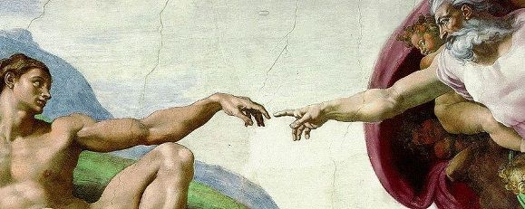

Godel's Proof of the Existence of God
in the early 1940s, kurt gödel wrote down a proof of the existence of god. he kept it private for decades, apparently worried it would be mistaken for a personal theological conviction rather than what it actually was: a demonstration of what formal logic can and cannot do. it only became widely known in 1987, two years after his death, when a colleague circulated his notes.
today i want to explain it carefully, because it is easy to misunderstand and even easier to dismiss.

the argument belongs to a tradition called the ontological argument, first formulated by anselm of canterbury in the eleventh century. the core idea, stripped to its bones, is this: god is defined as the greatest conceivable being. a being that exists is greater than one that does not. therefore god exists. this sounds like a sleight of hand, and most people's reaction is that you cannot define something into existence. gödel's version is a serious attempt to make the argument rigorous enough that the sleight of hand, if it exists, can be located precisely.
to understand it you need a small amount of modal logic. modal logic is the logic of possibility and necessity. it adds two operators to ordinary logic: $\Diamond$ meaning "it is possible that" and $\Box$ meaning "it is necessarily the case that". a possible world is just a consistent description of how things could be. necessity means true in every possible world. possibility means true in at least one.
this is not mysticism. it is the same framework philosophers and mathematicians use when they say things like "it is necessarily true that $2 + 2 = 4$" or "it is possible that there is life on europa". possible worlds are a bookkeeping device for reasoning about what could be, not a claim that parallel universes exist.
now, gödel's argument. he begins with a primitive notion: some properties are positive. he does not define what positive means precisely, but gives it axioms. theologically you might read positive as purely good, no evil component. logically it is just a predicate on properties satisfying certain rules.
his axioms are:
$\textbf{A1}$: if a property $P$ is positive, its negation $\neg P$ is not positive. and if $P$ is not positive, $\neg P$ is positive. positivity and its negation are exclusive and exhaustive.
$\textbf{A2}$: if $P$ is positive and $P$ necessarily implies $Q$ (every possible thing with $P$ also has $Q$), then $Q$ is positive.
$\textbf{A3}$: the property of being god-like is positive. god-like means having all positive properties.
$\textbf{A4}$: if a property is positive, it is necessarily positive. positivity does not vary across possible worlds.
$\textbf{A5}$: necessary existence is a positive property.
from these axioms, gödel derives three results in sequence.
first, a theorem: if it is possible that a god-like being exists, then a god-like being necessarily exists. this is the hinge of the argument. it uses the modal logic principle that if something is possibly necessary, it is necessary. the reasoning is: a god-like being, by definition, has all positive properties. necessary existence is a positive property by A5. so any god-like being, if it exists anywhere, exists in every possible world. possibility of existence therefore implies necessary existence.
second, a theorem: it is possible that a god-like being exists. this follows from A1 through A3. since being god-like is a positive property, and positive properties are consistent with each other (gödel proves this from A1 and A2), there is no contradiction in a god-like being existing somewhere.
third, combining both: a god-like being necessarily exists.
the argument is valid. if you accept the axioms, the conclusion follows by the rules of modal logic. this has been verified by computer, most famously by christoph benzmüller and bruno woltzenlogel paleo in 2013 using automated theorem provers.
where it gets interesting is the axioms themselves. A1 through A4 are fairly defensible. the load-bearing one is A5: that necessary existence is a positive property. this is precisely the move anselm made in the eleventh century, and it is where most philosophers push back. kant's objection was that existence is not a property at all, necessary or otherwise. if he is right, A5 is not just false but malformed. gödel was aware of this, which is part of why he was cautious about the proof.
there is also a known problem called modal collapse: from gödel's axioms one can derive that every true proposition is necessarily true, leaving no room for contingency in the world at all. this is not obviously wrong, but it is a strong conclusion that most people would not have signed up for.
gödel himself never claimed the proof was sound, only that it was an interesting formal object. the real value is not the conclusion but the precision. by formalising the ontological argument, gödel made it possible to identify exactly which assumptions are doing the work and exactly where a skeptic must object. that is what mathematics does to philosophy: it turns disagreements about intuitions into disagreements about axioms, which is a much more tractable kind of disagreement.